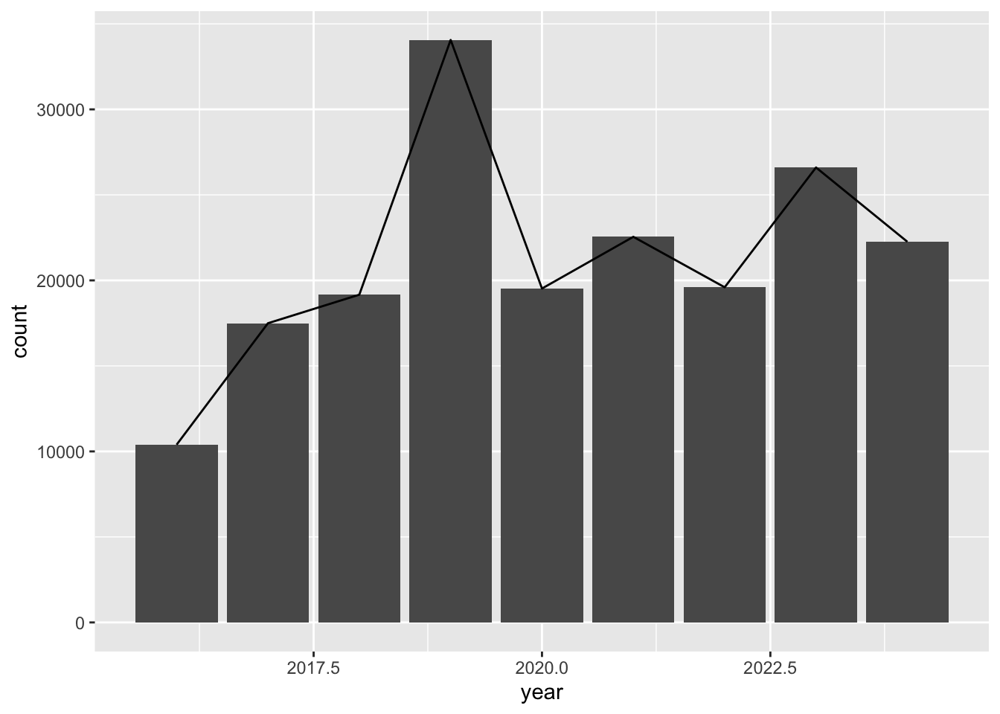
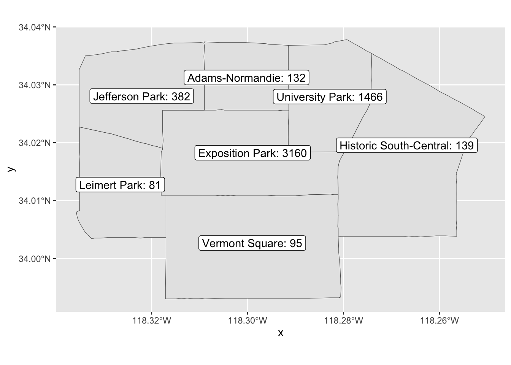
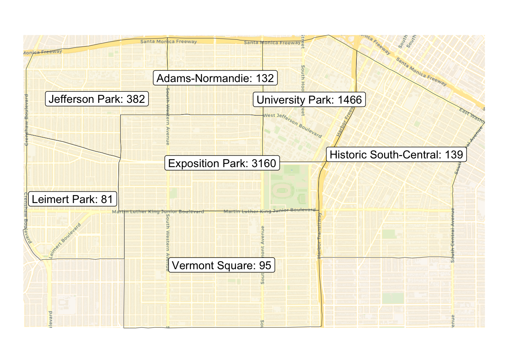

library(readr) # read and write tabular data
library(dplyr) # manipulate data
library(lubridate) # manipulate dates
library(ggplot2) # create data visualizations
library(sf) # handle geospatial data
library(mapview) # create interactive maps
library(basemaps) # add basemap
source('../scripts/map_utils.R')Additional Analysis
In this section, we will show a few more examples of maps and charts.
For more examples of charts and graphs visit R Graph Gallery.
First, we need to read data from the CNC iNaturalist observation file.
inat_data <- read_csv('data/cleaned/cnc-los-angeles-observations.csv')Let’s add a year column to iNaturalist data.
inat_year <- inat_data %>%
mutate(year = year(observed_on)) Let’s add a geometry column
inat_sf <- inat_data %>%
st_as_sf(coords = c("longitude", "latitude"), crs = 4326) %>%
select(user_login, common_name, scientific_name, observed_on, url, quality_grade)Dodged bar charts
To create side-by-side dodged bar charts, use position=position_dodge()
ggplot(data = inat_year ,
mapping = aes(x = year, fill = quality_grade)) +
geom_bar(position = position_dodge(preserve = 'single')) 
Multiple line charts
If we want a chart with multiple lines, we need to create a data frame with three columns: one column x axis, one column for y axis, and one column for color.
year_quality_count <- inat_data %>%
mutate(year = year(observed_on)) %>%
count(year, quality_grade, name='count')
year_quality_count# A tibble: 27 × 3
year quality_grade count
<dbl> <chr> <int>
1 2016 casual 1819
2 2016 needs_id 2605
3 2016 research 5968
4 2017 casual 3045
5 2017 needs_id 4855
6 2017 research 9595
7 2018 casual 2492
8 2018 needs_id 5698
9 2018 research 10974
10 2019 casual 5696
# ℹ 17 more rowsggplot(data = year_quality_count,
mapping = aes(x = year, y = count, color = quality_grade)) +
geom_line()
Multiple charts
Each geom_ adds a layer to the chart. We can have multiple chart layers in one chart by having multiple geom_.
Let’s create a bar and line chart that uses the same data and mapping.
inat_year_count <- inat_data %>%
mutate(year = year(observed_on)) %>%
count(year, name='count')
inat_year_count# A tibble: 9 × 2
year count
<dbl> <int>
1 2016 10392
2 2017 17495
3 2018 19164
4 2019 34057
5 2020 19524
6 2021 22549
7 2022 19597
8 2023 26602
9 2024 22258ggplot(data = inat_year_count,
mapping = aes(x = year, y = count)) +
geom_col() +
geom_line()
Let’s create a dodged bar and line chart that uses the different data and different mapping. Instead of putting the information inside ggplot(), we put information in each geom_.
ggplot() +
geom_bar(data = inat_year ,
mapping = aes(x = year, fill = quality_grade),
position = position_dodge(preserve = 'single')) +
geom_line(data = inat_year_count,
mapping = aes(x = year, y = count))
Adding labels and basemaps to ggplot map
Let’s get the observation counts for neighborhoods around Exposition Park
la_neighborhoods_sf <- st_read('data/raw/la_times_la_county_neighborhoods.json')Reading layer `la_times_la_county_neighborhoods' from data source
`/Users/wyk/Development/science/city_nature_challenge/NHMLA_workshop/CNC-coding-workshop_quarto/lessons/data/raw/la_times_la_county_neighborhoods.json'
using driver `GeoJSON'
Simple feature collection with 272 features and 2 fields
Geometry type: MULTIPOLYGON
Dimension: XY
Bounding box: xmin: -118.9449 ymin: 33.29819 xmax: -117.6456 ymax: 34.82319
Geodetic CRS: WGS 84Get Exposition Park neighborhood
expo_park_sf <- la_neighborhoods_sf %>%
filter(name=='Exposition Park')
expo_park_sfSimple feature collection with 1 feature and 2 fields
Geometry type: MULTIPOLYGON
Dimension: XY
Bounding box: xmin: -118.3181 ymin: 34.01081 xmax: -118.2797 ymax: 34.02571
Geodetic CRS: WGS 84
name slug geometry
1 Exposition Park exposition-park MULTIPOLYGON (((-118.3054 3...There is a bug with sf https://github.com/r-spatial/sf/issues/1762. This bit of code is fix for the bug.
sf_use_s2(FALSE)Spherical geometry (s2) switched offGet neighborhoods surrounding Exposition Park
expo_area_sf <- la_neighborhoods_sf[lengths(st_intersects(la_neighborhoods_sf, expo_park_sf)) > 0, ]although coordinates are longitude/latitude, st_intersects assumes that they
are planarexpo_area_sf <- expo_area_sf %>%
select(name)
expo_area_sfSimple feature collection with 7 features and 1 field
Geometry type: MULTIPOLYGON
Dimension: XY
Bounding box: xmin: -118.3357 ymin: 33.99301 xmax: -118.2505 ymax: 34.03781
Geodetic CRS: WGS 84
name geometry
2 Adams-Normandie MULTIPOLYGON (((-118.309 34...
78 Exposition Park MULTIPOLYGON (((-118.3054 3...
104 Historic South-Central MULTIPOLYGON (((-118.2564 3...
113 Jefferson Park MULTIPOLYGON (((-118.309 34...
130 Leimert Park MULTIPOLYGON (((-118.3181 3...
233 University Park MULTIPOLYGON (((-118.2828 3...
242 Vermont Square MULTIPOLYGON (((-118.2827 3...Use custom function add_inat_count_to_boundary_sf() to count the number of iNaturalist observations per neighborhood.
expo_area_count_sf <- add_inat_count_to_boundary_sf(inat_sf, expo_area_sf, 'name')although coordinates are longitude/latitude, st_intersects assumes that they
are planar
although coordinates are longitude/latitude, st_intersects assumes that they
are planarexpo_area_count_sfSimple feature collection with 7 features and 2 fields
Geometry type: MULTIPOLYGON
Dimension: XY
Bounding box: xmin: -118.3357 ymin: 33.99301 xmax: -118.2505 ymax: 34.03781
Geodetic CRS: WGS 84
name observations_count geometry
1 Adams-Normandie 132 MULTIPOLYGON (((-118.309 34...
2 Exposition Park 3160 MULTIPOLYGON (((-118.3054 3...
3 Historic South-Central 139 MULTIPOLYGON (((-118.2564 3...
4 Jefferson Park 382 MULTIPOLYGON (((-118.309 34...
5 Leimert Park 81 MULTIPOLYGON (((-118.3181 3...
6 University Park 1466 MULTIPOLYGON (((-118.2828 3...
7 Vermont Square 95 MULTIPOLYGON (((-118.2827 3...Create map with labels that show counts
ggplot(expo_area_count_sf, aes(label=paste0(name,': ', observations_count))) +
geom_sf() +
geom_sf_label(fill = "white" ) Warning in st_point_on_surface.sfc(sf::st_zm(x)): st_point_on_surface may not
give correct results for longitude/latitude data
Change crs to since basemaps package uses 3857
expo_area_count_sf <- st_transform(expo_area_count_sf, crs = st_crs(3857))Create map with labels that show counts and basemap
ggplot(expo_area_count_sf) +
basemap_gglayer(expo_area_count_sf) +
scale_fill_identity() +
geom_sf( mapping=aes(fill=alpha("yellow", .05))) +
geom_sf_label( mapping=aes(label = paste0(name, ': ',observations_count)) ) +
theme_void()Loading basemap 'voyager' from map service 'carto'...